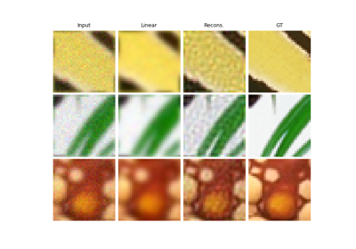

BlurFFT
- class deepinv.physics.BlurFFT(img_size, filter, device='cpu', **kwargs)[source]
Bases:
DecomposablePhysicsFFT-based blur operator.
It performs the operation
\[y = w*x\]where \(*\) denotes convolution and \(w\) is a filter.
Blur operator based on
torch.fftoperations, which assumes a circular padding of the input, and allows for the singular value decomposition viadeepinv.Physics.DecomposablePhysicsand has fast pseudo-inverse and prox operators.
Examples using BlurFFT:



Deep Equilibrium (DEQ) algorithms for image deblurring
Deep Equilibrium (DEQ) algorithms for image deblurring